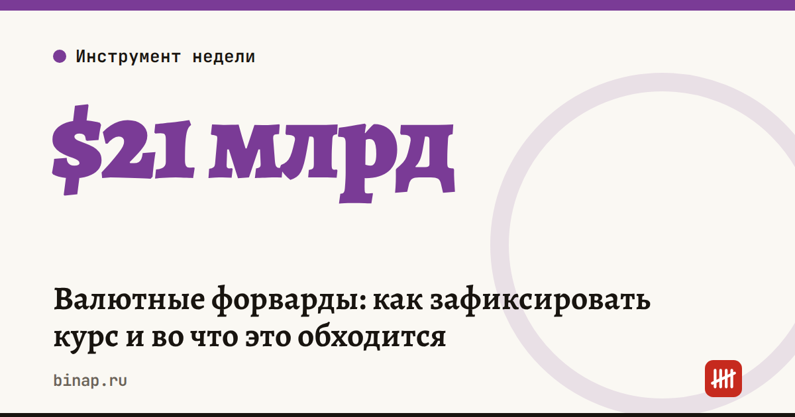

Валютные форварды: как зафиксировать курс и во что это обходится

Валютный форвард — договор с банком, по которому вы заранее фиксируете сумму, курс и дату обмена валюты. Импортёру он нужен, чтобы себестоимость не выросла из-за скачка курса между заказом и оплатой. Защита платная: банк закладывает её цену в форвардный курс. По подсчётам ЦБ, за первое полугодие 2026 года объём валютных форвардов компаний вырос примерно в полтора раза — с почти $14 млрд до $21 млрд.
Коротко
- Форвард фиксирует курс на дату будущего платежа — себестоимость импорта становится предсказуемой.
- За полгода компании заключили около 18,5 тыс. таких договоров — вдвое больше, чем за тот же период 2025 года (по данным ЦБ, которые приводят «Коммерсантъ» и «Клерк»).
- Цена защиты зависит от разницы ставок и срока: гендиректор одного из импортёров назвал «Коммерсанту» 5–10% от суммы контракта для сделок на 3–6 месяцев.
- Если курс не изменится, вы заплатите за страховку; эти расходы обычно уходят в цену товара.
- Можно застраховать только часть суммы — так дешевле и всё равно спокойнее.
Сроки, изменения и разборы для ИП и самозанятых — каждое утро в Telegram и MAX. Подпишитесь, чтобы не пропустить.
Как работает форвард
- Вы и банк договариваетесь: через 3 месяца вы покупаете $50 000 по курсу X.
- Курс X — форвардный: текущий курс плюс надбавка, которая зависит от разницы процентных ставок в рублях и валюте и от срока. По оценке, которую приводит «Клерк», разница ставок России и США — около 10% годовых.
- В дату исполнения вы платите рубли по курсу X, независимо от того, каким стал рыночный курс.
- Пользуются импортёры, которые платят поставщикам в валюте, и экспортёры с валютной выручкой и рублёвыми расходами.
Пример (расчёт редакции)
Нужно оплатить поставщику $50 000 через 3 месяца. Банк закладывает в курс 2,5% за этот срок (около 10% годовых). Курс сегодня условно 82 ₽.
| Сценарий через 3 месяца | Без форварда | С форвардом (курс 84,05 ₽) |
|---|---|---|
| Курс остался 82 ₽ | 4 100 000 ₽ | 4 202 500 ₽ (переплата 102 500 ₽) |
| Курс вырос до 90 ₽ | 4 500 000 ₽ | 4 202 500 ₽ (экономия 297 500 ₽) |
| Курс упал до 78 ₽ | 3 900 000 ₽ | 4 202 500 ₽ (переплата 302 500 ₽) |
Форвард — это не способ заработать на курсе, а способ знать себестоимость заранее. Посчитайте себестоимость единицы при разных курсах в калькуляторе себестоимости импорта.
Чем ещё можно защититься от курса
| Способ | Плюсы | Минусы |
|---|---|---|
| Форвард с банком | точный курс на дату платежа | платная защита, нужен лимит банка |
| Купить валюту заранее | просто, без договора с банком | деньги заморожены до платежа |
| Валютная оговорка в договоре с покупателями | риск частично переносится на покупателей | подходит не всем рынкам |
| Ничего не делать | без расходов на защиту | себестоимость меняется вместе с курсом |
Что сделать сейчас
- Выпишите валютные платежи на ближайшие 3–6 месяцев с датами.
- Запросите у 2–3 банков форвардный курс на эти даты и сравните с текущим: разница и есть цена защиты.
- Посчитайте, как скачок курса на 10% меняет себестоимость и маржинальный доход, — и решите, что хуже: скачок или фиксированная переплата.
- Начните с части суммы — например, половины ближайшего платежа.
Как платить поставщику и не получить вопросов от банка — в разделе «Импортёрам». Кредиты на закупку — как сравнивать полную стоимость: кредит для малого бизнеса.
Частые вопросы
Снизит ли форвард цены для покупателей? Нет. Он лишь фиксирует ваш курс и сглаживает скачки себестоимости.
Кому он подходит? Тем, у кого длинные сроки поставки и крупные платежи или выручка в валюте.
Можно ли отказаться от форварда, если курс упал? Обычно нет: форвард — обязательство обеих сторон. Досрочное закрытие возможно по условиям банка и, как правило, с расходами. Читайте договор до подписи.